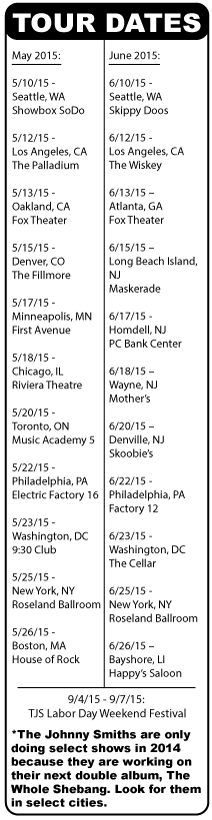
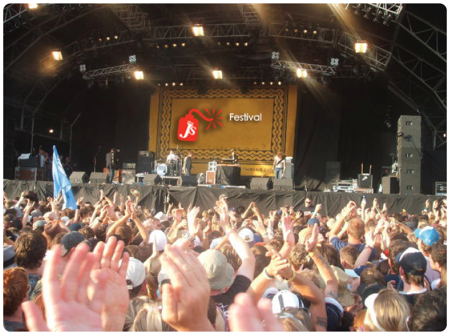

The Johnny Smiths’ (TJS) annual Labor Day weekend festival will be set up like the weekend
festivals of the past. Multiple stages and acts will be accompanying TJS with eclectic musical styles. TJS has always been the type of band that encourages and supports new and upcoming bands.
The festival welcomes new and unknown bands and artists in many different genres of music
including: Jazz, Folk, Indie Rock, New Wave, Steam Punk, Progressive Rock, Blues, Acoustic, Singer Songwriter, Country, Bluegrass, Ambient, Electronica, Acid Jazz, Jam Bands, World, New Age, Reggae, and the like.
Tickets will be available beginning Wednesday, August 1, 2017 10am PST for 3 day passes. Individual day passes will go on sale to the public beginning Friday, August 3, 2015 at 10am PST.



© The Johnny Smiths Band 2014